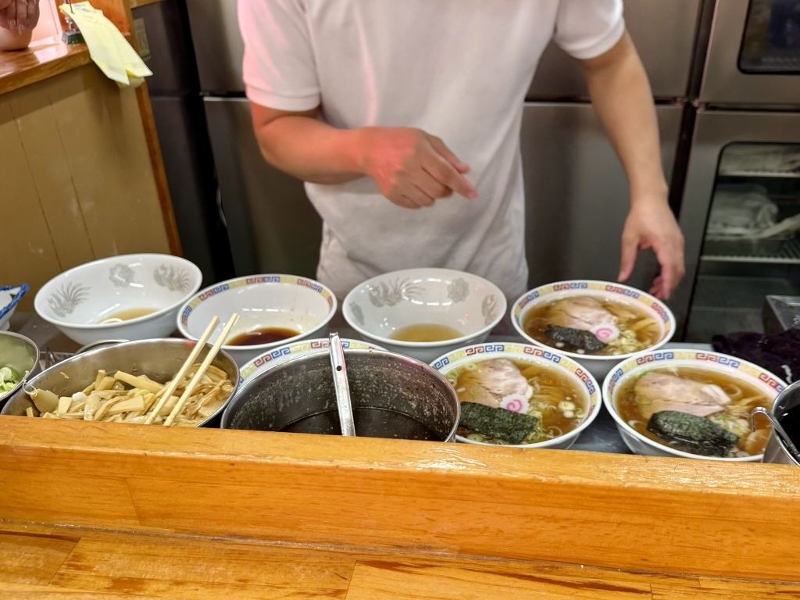
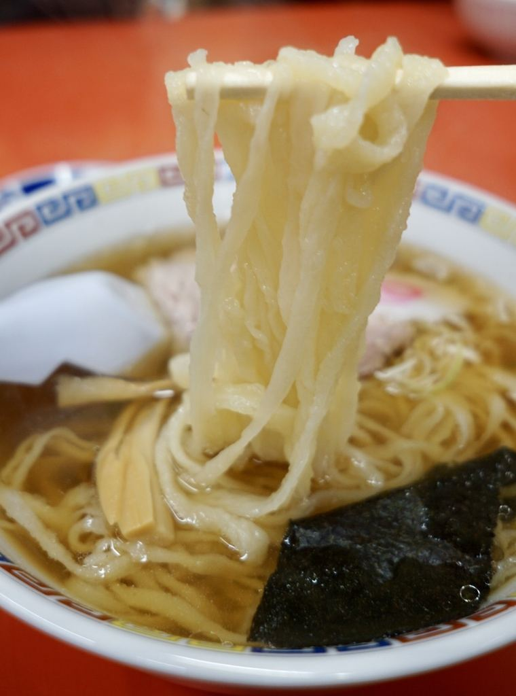
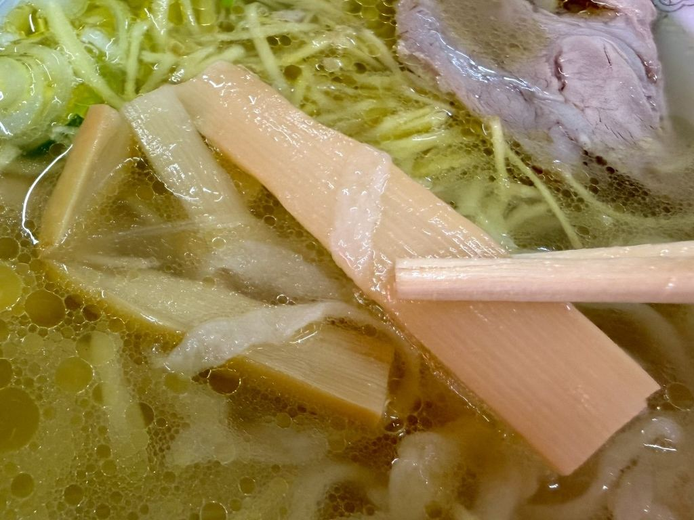

麺のこと
創業から七十五年、青竹（孟宗竹）に体重をかけて、麺を一玉ずつ打っております。
打ち上がるのは、平打ちの縮れ麺です。創業から七十五年、変わらずこの竹で打っております。


40
秒

打った麺は、茹で上がるまで四十秒。のびる前に、お出ししております。

昼 11:00〜14:30｜月曜定休｜駐車場 約11台｜お支払いは現金のみ
創業から七十五年、青竹（孟宗竹）に体重をかけて、麺を一玉ずつ打っております。
打ち上がるのは、平打ちの縮れ麺です。創業から七十五年、変わらずこの竹で打っております。

打った麺は、茹で上がるまで四十秒。のびる前に、お出ししております。
青竹で打った麺と、澄んだ醤油のスープを合わせております。お品書きは店内に掲げております。



麺と合わせて、焼き餃子もお出ししております。
カウンター七席、四人掛けのテーブルを五卓ご用意しております。お一人でも、皆様でも気兼ねなくお立ち寄りいただけます。
テーブル席もございますので、ご家族でもお使いいただけます。
「茨城県古河市に青竹手打ち麺の佐野ラーメン。昭和26年創業の地元に愛される人気店。」
お客様の声より
「古河と言えばこちらを紹介しない訳にはいかないよね。」
お客様の声より
| 住所 | 〒306-0231 茨城県古河市小堤2010-1 |
|---|---|
| 電話 | 0280-98-3912 |
| 営業時間 | 昼 11:00〜14:30 夜のご営業は日によって異なりますので、お電話でご確認ください。 |
| 定休日 | 月曜日（祝日の場合は翌日） ほかにお休みをいただく日がございます。お電話でお確かめください。 |
| 席数 | 27席（カウンター7席・4人掛けテーブル5卓） |
| 駐車場 | 約11台 |
| お支払い | 現金のみ |